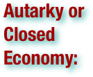
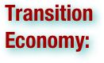

Economics Terms
Please scan the terms to find what you are looking for - they are not in order!


.pdf (. . . )

a socio-economic system based on private property rights, including the private ownership of resources or capital, with economic decisions made largely through the operation of an unregulated market; a socio-economic system based on the abstraction of resources into the form of privately-owned capital, with economic decisions made largely through the operation of an unregulated market; a specific variation or implementation of either such socio-economic system (wiktionary.org)
a term used by Karl Marx and Friedrich Engels to describe what they interpreted as early forms of communism: As a model, primitive communism is usually used to describe early hunter-gatherer societies, that had no hierarchical social class structures or capital accumulation. Any such communities therefore shared the key features of communism proper. (wikipedia.org)
A mixed economy is an economy that includes a variety of private and public control, reflecting characteristics of both capitalism and socialism. Most mixed economies can be described as market economies with strong regulatory oversight, in addition to having a variety of government-sponsored aspects. There is not one single definition for a mixed economy, but the definitions always involve a degree of private economic freedom mixed with a degree of government regulation of markets. The relative strength or weakness of each component in the national economy can vary greatly between countries. Economies ranging from the United States to Cuba have been termed mixed economies. (wikipedia.org)
Businesses of the same type, considered as a whole; Businesses that produce goods as opposed to services; The sector of the economy consisting of large-scale enterprises; Automated production of material goods (wiktionary.org)
A legally or socially binding conceptual contract of entitlement to wealth, void of intrinsic value, payable for all debts and taxes, and regulated in supply; A generally accepted means of exchange and measure of value; A currency maintained by a state or other entity which can guarantee its value (such as a monetary union); Hard cash in the form of banknotes and coins, as opposed to cheques/checks, credit cards, or credit more generally; The total value of liquid assets available for an individual or other economic unit, such as cash and bank deposits; Wealth; An item of value between two parties used for the exchange of goods or services. (wiktionary.org)


an economic theory that holds that the prosperity of a nation depends upon its supply of capital, and that the global volume of trade is "unchangeable" (wiktionary.org)

A resource employed to produce goods and services, such as labor, land, and capital (wiktionary.org)

Already-produced durable goods available for use as a factor of production, such as steam shovels (equipment) and office buildings (structures); money and wealth. The means to acquire goods and services, especially in a non-barter system. (wiktionary.org)

Natural economy refers to a type of economy in which money is not used in the transfer of resources among people. It is a system of allocating resources through direct bartering, entitlement by law, or sharing out according to traditional custom. In the more complex forms of natural economy, some goods may act as a referent for fair bartering, but generally currency plays only a small role in allocating resources. As a corollary, the majority of goods produced in a system of natural economy are not produced for the purpose of exchanging them, but for direct consumption by the producers (subsistence). (wikipedia.org)
A market economy is an economy in which the prices of goods and services are determined in a free price system. This is often contrasted with a fixed price system. Market economies can range from hypothetically pure laissez-faire variants to an assortment of real-world mixed economies, where the price system is under some state control or at least heavily regulated. In mixed economies, state-directed economic planning is not extensive enough to constitute a planned economy. In the real world, market economies do not exist in pure form, as societies and governments regulate them to varying degrees rather than allow self-regulation by market forces. (wikipedia.org)

any political philosophy or ideology advocating holding the production of resources collectively; any political social system that implements a communist political philosophy; the international socialist society where classes and the state no longer exist (wiktionary.org)
any of various economic and political philosophies that support social equality, collective decision-making, distribution of income based on contribution and public ownership of productive capital and natural resources, as advocated by socialists; the socialist political philosophies as a group, including Marxism, libertarian socialism, democratic socialism, and social democracy; the intermediate phase of social development between capitalism and full communism. This is a strategy whereby the state has control of all key resource-producing industries and manages most aspects of the economy, in contrast to laissez-faire capitalism (wiktionary.org)
an economy with an increased emphasis on informational activities and information industry (wikipedia.org)


To obtain (something) in exchange for money or goods (wiktionary.org)

An action, state of mind, or object one has an obligation to perform for another, adopt toward another, or give to another; The state or condition of owing something to another; Money that one person or entity owes or is required to pay to another, generally as a result of a loan or other financial transaction (wiktionary.org)

To agree to transfer goods or provide services in exchange for money (wikipedia.org)

To receive payment for work. (wiktionary.org)
the process of going to a more interconnected world; the process of making world economy dominated by capitalist models (wiktionary.org)
(Gross National Product) the total market value of all the goods and services produced by a nation (citizens of a country, whether living at home or abroad) during a specified period (wiktionary.org)
The amount (of money or goods or services) that is considered to be a fair equivalent for something else (wiktionary.org)
That which is produced, then traded, bought or sold, then finally consumed and consists of an action or work (wiktionary.org)
To yield, make or manufacture. (wiktionary.org)


to use; to eat; to occupy (wiktionary.org)

network that allows trade (wikipedia.org)

That which is produced, then traded, bought or sold, then finally consumed (wiktionary.org)

transfer of ownership of goods and services from one person to another; sometimes loosely called commerce, financial transaction, or barter (wikipedia.org)
(Gross Domestic Product) a measure of the economic production of a particular territory in financial capital terms over a specific time period (wiktionary.org)

act of selling goods or services to a foreign country (wikipedia.org)

act of buying goods or services from a foreign country (wikipedia.org)

exporting and importing of goods among different countries (wikipedia.org)
a policy of governmental non-interference in economic affairs; a policy of non-interference by authority in any competitive process (wiktionary.org)


the market consists of a very large number of firms producing a homogeneous product (wikipedia.org)

there is only one buyer in a market (wikipedia.org)

also called competitive market, where there are a large number of independent firms which have a very small proportion of the market share (wikipedia.org)

there is only one provider of a product or service (wikipedia.org)
original form of trade, the direct exchange of goods and services (wikipedia.org)
a market is dominated by a small number of firms which own more than 40% of the market share (wikipedia.org)
a market dominated by many sellers and a few buyers (wikipedia.org)
A 'black market' is a market in goods or services which operates outside the formal one(s) supported by established state power. Typically the totality of such activity is referred to with the definite article as a complement to the official economies, by market for such goods and services, e.g. "the black market in bush meat" or the state jurisdiction "the black Market in China". Although markets in the regular economy are not given a "white" attribute, markets that have borderline status are called "grey". (wikipedia.org)
A subsistence economy is an economy which refers simply to the gathering or amassment of objects of value; the increase in wealth; or the creation of wealth. Capital can be generally defined as assets invested with the expectation that their value will increase, usually because there is the expectation of profit, rent, interest, royalties, capital gain or some other kind of return. However, this type of economy cannot usually become wealthy by virtue of the system, and instead requires further investments to stimulate economic growth. In other words, a subsistence economy only possesses enough goods to be used by a particular nation to maintain its existence and provides little to no surplus for other investments. Therefore, this type of economy aims to create economic stability so that capital can be accumulated and the inevitable economic surplus can be invested in other potentially lucrative business ventures. (wikipedia.org)


The informal sector or informal economy as defined by governments, scholars, banks, etc. is the part of an economy that is not taxed, monitored by any form of government, or included in any gross national product (GNP), unlike the formal economy. In developing countries, some 70% of the potential working population earn their living in the informal sector. They would define this economy or sector in other words: not in what it is not, but what it is: the only way to earn a living for people who are self-employed outside the formal economy and not on anyone's payroll. Most of them live and work in this sector not because it is their wish or choice, but because they have no chance to be hired by an employer from the formal sector except for a few hours or days, with no legal right to be hired again. (wikipedia.org)

A dual economy is the existence of two separate economic sectors within one country, divided by different levels of development, technology, and different patterns of demand. The concept was originally created by Julius Herman Boeke to describe the coexistence of modern and traditional economic sectors in a colonial economy. Dual economies are common in less developed countries, where one sector is geared to local needs and another to the global export market. (wikipedia.org)

Planned economy is an economic system in which the state directs the economy. It is an economic system in which the central government controls industry such that it makes major decisions regarding the production and distribution of goods and services. Its most extensive form is referred to as a command economy, centrally planned economy, or command and control economy. In such economies, central economic planning by the state or government controls all major sectors of the economy and formulates all decisions about the use of resources and the distribution of output. Planners decide what should be produced and direct lower-level enterprises to produce those goods in accordance with national and social objectives. (wikipedia.org)

An open economy is an economy in which there are economic activities between domestic community and outside, e.g. people, including businesses, can trade in goods and services with other people and businesses in the international community, and flow of funds as investment across the border. This contrasts with a closed economy in which international trade and finance cannot take place. (wikipedia.org)
a monopoly in which economies of scale cause efficiency to increase continuously with the size of the firm (wikipedia.org)


A transition economy or transitional economy is an economy which is changing from a centrally planned economy to a free market. Transition economies undergo economic liberalization, where market forces set prices rather than a central planning organization and trade barriers are removed, privatization of government-owned enterprises and resources, and the creation of a financial sector to facilitate macroeconomic stabilization. and the movement of private capital. The process has been applied in China, the former Soviet Union and Communist bloc countries of Europe, and many third world countries. The transition process is usually characterized by the changing and creating of institutions, particularly private enterprises; changes in the role of the state, thereby, the creation of fundamentally different governmental institutions and the promotion of private-owned enterprises, markets and independent financial institutions. In essence, transition involves the functional restructuring of state institutions from being a provider of growth to an enabler, with the private sector its engine. (wikipedia.org)
Traditional economy is a сatch-all term normally used to describe economic systems that pertain in societies with extensive subsistence agriculture. The term may also be used for any economy that falls outside of popular notions of market and command economies. The term tends to be used by members of industrialized societies to describe societies deemed "underdeveloped," and often appears alongside such controversial and disparaging terms as "primitive." For this reason, and because the term is vague and unspecific, the term sees little use among scholars in the fields of economics or anthropology, predominating instead in popular discourse. (wikipedia.org)

A plantation economy is an economy which is based on agricultural mass production, usually of a few staple products grown on large farms called plantations. Plantation economies rely on the export of cash crops as a source of income. (wikipedia.org)

A palace economy or redistribution economy is a system of economic organization in which a substantial share of the wealth flows into the control of a centralized administration, the palace, and out from there to the general population, which may be allowed its own sources of income but relies heavily on the wealth redistributed by the palace. It can be seen as a combination of a command economy and a subsistence economy. This was characteristic of Bronze Age absolute monarchies where the sacred king and his bureaucrats controlled all aspects of the economy. (wikipedia.org)


The world economy, or global economy, generally refers to the economy, which is based on economies of all of the world's countries, national economies. Also global economy can be seen as the economy of global society and national economies – as economies of local societies, making the global one. (wikipedia.org)

An Anglo-Saxon economy or Anglo-Saxon capitalism (so called because it is supposedly practiced in English-speaking countries such as the United Kingdom, the United States, Canada, New Zealand, Australia and the Republic of Ireland) is a capitalist macroeconomic model in which levels of regulation and taxes are low, and government provides relatively fewer services. (wikipedia.org)

In the social sciences, a gift economy (or gift culture) is a society where valuable goods and services are regularly given without any explicit agreement for immediate or future rewards (i.e. no formal quid pro quo exists). Ideally, simultaneous or recurring giving serves to circulate and redistribute valuables within the community. The organization of a gift economy stands in contrast to a barter economy or a market economy. Informal custom governs exchanges, rather than an explicit exchange of goods or services for money or some other commodity. (wikipedia.org)

The social market economy is the main economic model used in West Germany after World War II. The social market economy seeks a middle path between socialism and laissez-faire economic liberalism (i.e. a mixed economy), combining private enterprise with government regulation to establish fair competition, maintaining a balance between a high rate of economic growth, low inflation, low levels of unemployment, good working conditions, social welfare, and public services, by using state intervention. The term "social" was chosen rather than "socialist" to distinguish the social market economy from a system in which the state directed economic activity and/or owned the means of production, which are usually privately-owned in the social market model. In a social market economy, collective bargaining is often done on a national level not between one corporation and one union, but national employers' organizations and national trade unions. (wikipedia.org)
Autarky is the quality of being self-sufficient. Usually the term is applied to political states or their economic policies. Autarky exists whenever an entity can survive or continue its activities without external assistance. Autarky is not necessarily economic. For example, a military autarky would be a state that could defend itself without help from another country. Autarky can be said to be the policy of a state or other entity when it seeks to be self-sufficient as a whole, but also can be limited to a narrow field such as possession of a key raw material. (wikipedia.org)

The category of newly industrialized country (NIC) is a socioeconomic classification applied to several countries around the world by political scientists and economists. NICs are countries whose economies have not yet reached First World status but have, in a macroeconomic sense, outpaced their developing counterparts. Another characterization of NICs is that of nations undergoing rapid economic growth (usually export-oriented). Incipient or ongoing industrialization is an important indicator of a NIC. In many NICs, social upheaval can occur as primarily rural, or agricultural, populations migrate to the cities, where the growth of manufacturing concerns and factories can draw many thousands of laborers. NICs usually share some other common features, including:
▪Increased social freedoms and civil rights.
▪Strong political leaders.
▪A switch from agricultural to industrial economies, especially in the manufacturing sector.
▪An increasingly open-market economy, allowing free trade with other nations in the world.
▪Large national corporations operating in several continents.
▪Strong capital investment from foreign countries.
▪Political leadership in their area of influence.
▪Lowered poverty rates. (wikipedia.org)

The American School, also known as "National System", represents three different yet related constructs in politics, policy and philosophy. It was the American policy for the 1860s to the 1940s, waxing and waning in actual degrees and details of implementation. Historian Michael Lind describes it as a coherent applied economic philosophy with logical and conceptual relationships with other economic ideas. It is the macroeconomic philosophy that dominated United States national policies from the time of the American Civil War until the mid-twentieth century (after mercantilism and prior to Keynesian economics, it can be seen as a modified type of classical economics). It consisted of these three core policies:
1.protecting industry through selective high tariffs (especially 1861–1932) and some include through subsidies (especially 1932–70)
2.government investments in infrastructure creating targeted internal improvements (especially in transportation)
3.a national bank with policies that promote the growth of productive enterprises rather than speculation.
It is a capitalist economic school based on the Hamiltonian economic program. The American School of capitalism was intended to allow the United States to become economically independent and nationally self-sufficient. (wikipedia.org)